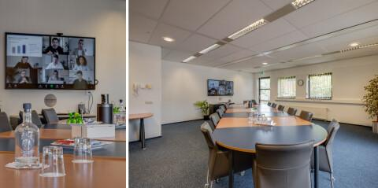
Boardroom
- Opstelling
- Vergadering / hybride vergadering
- Faciliteiten
- Scherm, camera, flipover
- Prijs
- op aanvraag
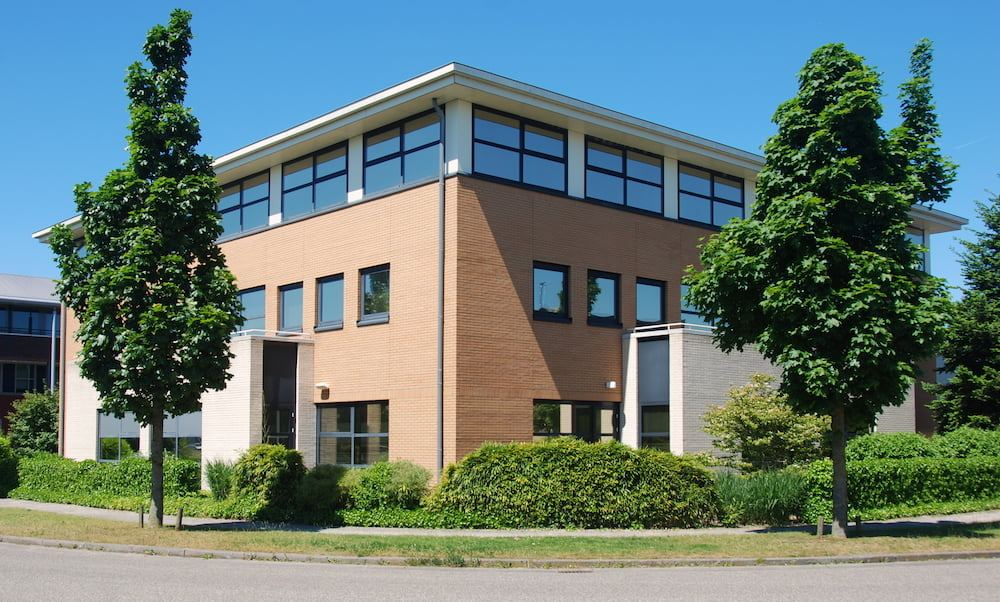
Aan knooppunt Hoevelaken, nog geen vijf minuten van Amersfoort: zeven ruimtes om te vergaderen, trainen en ontmoeten, voor groepen tot 70 personen. Gratis parkeren en een persoonlijke Host.
Op zoek naar een vergaderruimte in Amersfoort of Hoevelaken, voor een vergadering, training, workshop of event? Onze locatie aan De Wel in Hoevelaken ligt op nog geen vijf minuten van Amersfoort en pal naast knooppunt Hoevelaken — daarmee ben je vanaf de Randstad, Utrecht en het oosten van het land zo ter plekke.
Of je nu met een kleine groep vergadert, een trainingsdag organiseert of een grotere bijeenkomst plant: wij denken graag met je mee. Zeven flexibele vergaderruimtes, een centrale ontmoetingsruimte om even te ontspannen, en de koffie staat altijd klaar.
Agaat van Ekeren vertelt je graag over de mogelijkheden en denkt mee over de beste opstelling en logistiek.
De Wel 14–16, Hoevelaken
Stuur een e-mailKies hoe je de ruimte wilt gebruiken: voor een vergadering of congres, als trainings- en opleidingsruimte, voor productpresentaties, of als webinarstudio.

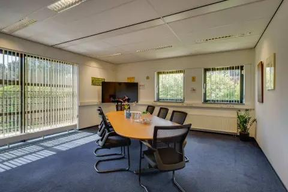
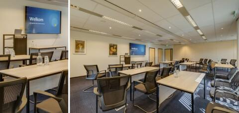
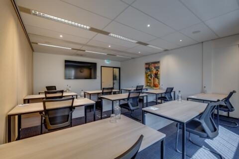
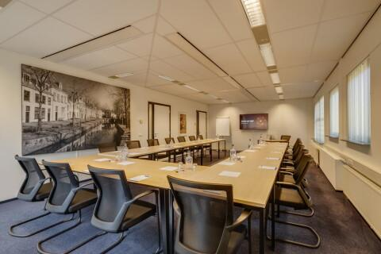
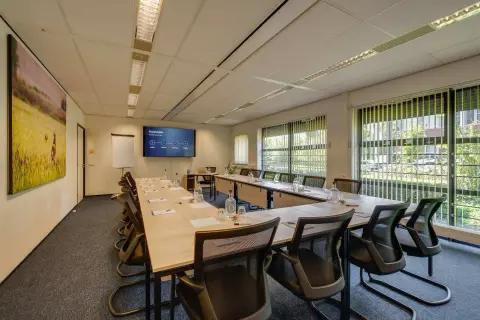
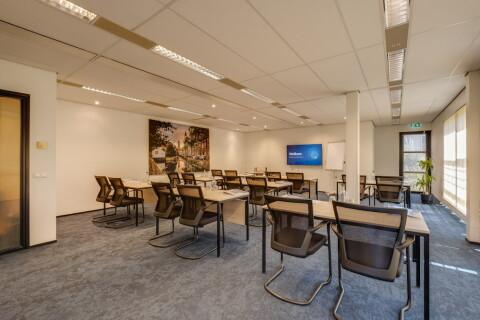
De Vergaderruimte Groot Amersfoort en de Vergaderruimte Klein Hoevelaken samengevoegd tot één ruimte — geschikt voor congressen, bijeenkomsten en hackathons.
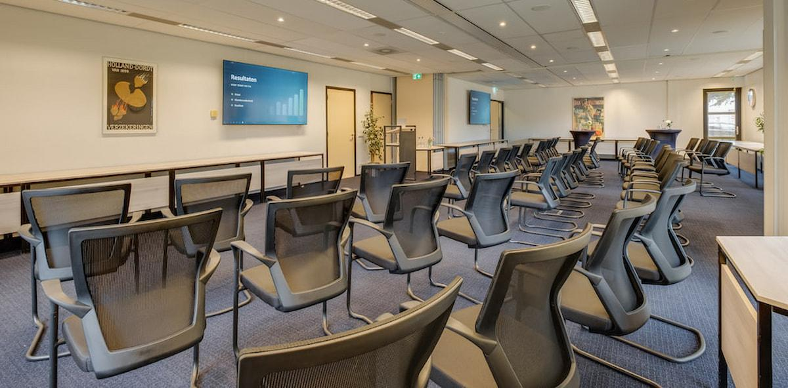
Ben je een opleidingsinstituut, trainingsbureau of zelfstandig opleider? Voor terugkerende trainingsdagen, meerdaagse trajecten of een vaste lesgroep denken we graag mee over een arrangement op maat — van een vaste ruimte en planning tot afspraken over catering en opstelling.
Naast de vergader-, congres- en trainingsruimtes is er een webinarstudio aanwezig voor het opnemen en livestreamen van webinars, video’s en presentaties.
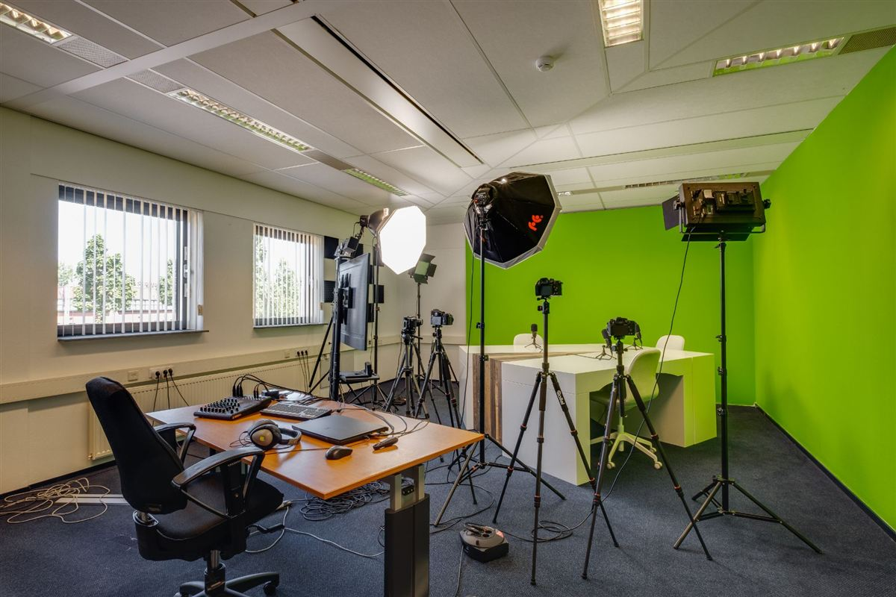
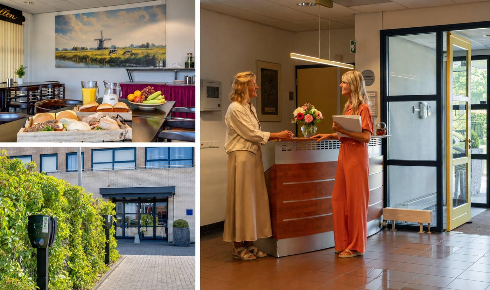
Bij het huren van een vergaderruimte word je altijd persoonlijk ontvangen door onze Host, en heb je toegang tot onze kantine — de centrale plek om tussen de sessies door bij te praten met een kop koffie.
Alles wat je moet weten om een vergaderruimte, trainingsruimte of congreszaal in de regio Amersfoort te kiezen.
| Ruimte | Personen | Geschikt voor |
|---|---|---|
| Vergaderruimte Muurhuizen | tot 8 | Vergaderen, hybride |
| Boardroom | tot 12 | Vergaderen, hybride |
| Vergaderruimte Klein Hoevelaken | tot 12 | Training, opleiding |
| Vergaderruimte Koppelpoort | 15 – 18 | Training, opleiding |
| Vergaderruimte Havik | tot 17 | Training, opleiding |
| Vergaderruimte Lange Jan | tot 17 | Training, opleiding |
| Vergaderruimte Groot Amersfoort | 24 – 30 | Training, presentatie |
| Grote A1 vergaderruimte | 50 – 70 | Congres, bijeenkomst, hackathon |
Deze organisaties vergaderden en trainden al bij Amersfoort-vergaderruimte.nl
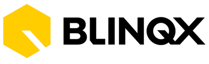
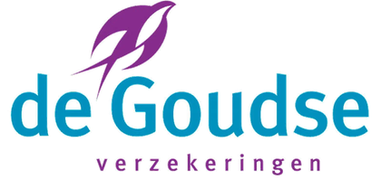
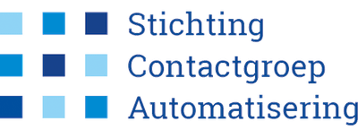
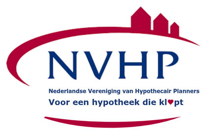
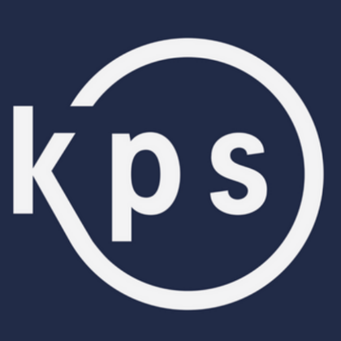
We denken graag mee over de beste opstelling en logistiek, ook voor kleine congressen, hackathons en andere bijeenkomsten. Catering in overleg — vraag naar de mogelijkheden voor lunch, diner of borrel.
Over vergaderen, trainen en huren in Amersfoort en Hoevelaken.
Met de auto rijd je via de A1 of A28 naar knooppunt Hoevelaken; vanuit Amersfoort ben je er in nog geen vijf minuten. Je parkeert gratis voor de deur aan De Wel 14-16 in Hoevelaken. Met de trein reis je naar station Hoevelaken (Valleilijn vanaf Amersfoort Centraal), op ongeveer 10 minuten lopen.
Er zijn zeven ruimtes: de Boardroom (tot 12 personen), Vergaderruimte Muurhuizen (tot 8), Vergaderruimte Groot Amersfoort (24 tot 30), Vergaderruimte Klein Hoevelaken (tot 12), Vergaderruimte Havik (tot 17), Vergaderruimte Koppelpoort (15 tot 18) en Vergaderruimte Lange Jan (tot 17). Groot Amersfoort en Klein Hoevelaken samen vormen de Grote A1 vergaderruimte voor 50 tot 70 personen.
Ja. De Boardroom en Vergaderruimte Muurhuizen zijn ingericht voor hybride vergaderingen, met scherm, camera en flipover. Deelnemers op afstand sluiten zo eenvoudig aan.
Ja, in overleg verzorgen we lunch, diner of een borrel. Koffie en thee staan altijd klaar in de kantine, waar je tussen de sessies door bijpraat.
Amersfoort-vergaderruimte.nl ligt aan De Wel in Hoevelaken, op nog geen vijf autominuten van Amersfoort en direct bij knooppunt Hoevelaken (A1/A28). Daarmee ben je ook vanaf Nijkerk, Barneveld, Utrecht en de rest van de Randstad snel ter plekke.
Ja. Onze ruimtes zijn ook in school-, U-vorm- of theateropstelling in te richten, elk met scherm en flipover — geschikt voor cursussen, workshops en meerdaagse opleidingen. Voor opleidingsinstituten, trainingsbureaus en opleiders hebben we bovendien speciale arrangementen.
De Grote A1 vergaderruimte, een combinatie van de Vergaderruimte Groot Amersfoort en de Vergaderruimte Klein Hoevelaken, biedt in theater- of cabaretopstelling plaats aan 50 tot 70 personen. Ideaal voor een congres, bijeenkomst of hackathon.
Ja, er is gratis parkeren voor de deur, inclusief laadpalen voor elektrische auto's. Station Hoevelaken ligt op ongeveer 10 minuten lopen.
De prijs hangt af van de gekozen ruimte, opstelling en eventuele catering, en is daarom op aanvraag. Vraag vrijblijvend een offerte aan en we denken met je mee over de beste opstelling en logistiek.
Ja, er is een webinarstudio aanwezig voor het opnemen en livestreamen van webinars, video's en presentaties. De technische mogelijkheden en beschikbaarheid bespreken we graag vrijblijvend met je.